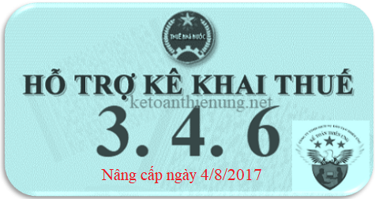

Phần mềm HTKK 3.4.6, đây là phần mềm hỗ trợ kê khai thuế mới nhất hiện nay của Tổng cục thuế được nâng cấp ngày 4/8/2017. Tải phẩn mềm HTKK 3.4.6 về tại đây:
TỔNG CỤC THUẾ THÔNG BÁO
V/v: Nâng cấp ứng dụng Hỗ trợ kê khai (HTKK) phiên bản 3.4.6, ứng dụng Khai thuế qua mạng (iHTKK) phiên bản 3.4.7, ứng dụng Hỗ trợ đọc, xác minh tờ khai, thông báo thuế định dạng XML (iTaxViewer) phiên bản 1.3.1 đáp ứng yêu cầu nghiệp vụ theo Thông tư số 36/2016/TT-BTC ngày 26/02/2016, Thông tư số 61/2016/TT-BTC ngày 11/04/2016 của Bộ Tài chính và Nghị định số 139/2016/NĐ-CP ngày 04/10/2016 của Chính phủ
V/v: Nâng cấp ứng dụng Hỗ trợ kê khai (HTKK) phiên bản 3.4.6, ứng dụng Khai thuế qua mạng (iHTKK) phiên bản 3.4.7, ứng dụng Hỗ trợ đọc, xác minh tờ khai, thông báo thuế định dạng XML (iTaxViewer) phiên bản 1.3.1 đáp ứng yêu cầu nghiệp vụ theo Thông tư số 36/2016/TT-BTC ngày 26/02/2016, Thông tư số 61/2016/TT-BTC ngày 11/04/2016 của Bộ Tài chính và Nghị định số 139/2016/NĐ-CP ngày 04/10/2016 của Chính phủ
- Đáp ứng yêu cầu nghiệp vụ theo Thông tư số 36/2016/TT-BTC ngày 26/02/2016 của Bộ Tài chính về việc hướng dẫn thực hiện quy định về thuế đối với các tổ chức, cá nhân tiến hành hoạt động tìm kiếm thăm dò và khai thác dầu khí theo quy định của Luật Dầu khí, Thông tư số 61/2016/TT-BTC ngày 11/04/2016 của Bộ Tài chính về việc hướng dẫn thu, nộp và quản lý khoản lợi nhuận, cổ tức được chia cho phần vốn nhà nước đầu tư tại doanh nghiệp và Nghị định số 139/2016/Đ-CP ngày 04/10/2016 của Chính phủ quy định về lệ phí môn bài, Tổng cục Thuế đã hoàn thành nâng cấp các ứng dụng hỗ trợ kê khai thuế (HTKK) phiên bản 3.4.6, ứng dụng Khai thuế qua mạng (iHTKK) phiên bản 3.4.7, ứng dụng Hỗ trợ đọc, xác minh tờ khai, thông báo thuế định dạng XML (iTaxViewer) phiên bản 1.3.1, cụ thể như sau:
1. Nội dung nâng cấp ứng dụng HTKK, iHTKK:
- Nâng cấp bổ sung các chức năng kê khai tờ khai dầu khí ban hành kèm theo Thông tư số 36/2016/TT-BTC, bao gồm:
+ Tờ khai quyết toán thuế tài nguyên đối với dầu khí (mẫu số 02/TAIN-DK);
+ Tờ khai quyết toán thuế thu nhập doanh nghiệp đối với dầu khí (mẫu số 02/TNDN-DK);
+ Tờ khai thuế thu nhập doanh nghiệp đối với thu nhập từ chuyển nhượng quyền lợi tham gia hợp đồng dầu khí (mẫu số 03/TNDN-DK);
+ Báo cáo dự kiến sản lượng dầu khí khai thác và tỷ lệ tạm nộp thuế (mẫu số 01/BCTL-DK).
- Nâng cấp bổ sung các chức năng kê khai tờ khai cổ tức, lợi nhuận được chia theo Thông tư số 61/2016/TT-BTC, bao gồm:
+ Tờ khai cổ tức, lợi nhuận được chia cho phần vốn nhà nước tại công ty cổ phần, công ty TNHH hai thành viên trở lên có vốn nhà nước do Bộ, ngành, địa phương đại diện chủ sở hữu (mẫu số 01/CTLNDC);
+ Tờ khai quyết toán lợi nhuận sau thuế còn lại sau khi trích lập các quỹ phải nộp ngân sách nhà nước của doanh nghiệp do nhà nước nắm giữ 100% vốn điều lệ (mẫu số 01/QT-LNCL).
- Nâng cấp bổ sung các chức năng kê khai tờ khai lệ phí môn bài (mẫu số 01/MBAI) ban hành theo Nghị định số 139/2016/NĐ-CP.
Xem thêm: Cách kê khai thuế môn bài
- Một số nội dung khác:
+ Nâng cấp chức năng kê khai tờ khai quyết toán thuế TNCN dành cho tổ chức, cá nhân trả thu nhập chịu thuế từ tiền lương, tiền công cho cá nhân (mẫu số 05/QTT-TNCN): Bổ sung thêm cột “Cá nhân nước ngoài ủy quyết quyết toán dưới 12 tháng/năm” trên phụ lục 05-1/BK-QTT-TNCN đính kèm tờ khai để hỗ trợ NNT kê khai trong trường hợp cá nhân là người nước ngoài không làm việc đủ 12 tháng trong năm nhưng vẫn đủ điều kiện ủy quyền quyết toán thuế cho tổ chức trả thu nhập.
+ Nâng cấp chức năng kê khai tờ khai thuế bảo vệ môi trường (mẫu số 01/TBVMT): Đối với mặt hàng xăng E5, ứng dụng hỗ trợ tính Thuế bảo vệ môi trường phải nộp trong kỳ - chỉ tiêu [06], cho phép sửa.
2. Nâng cấp các chức năng trên ứng dụng iTaxViewer:
- Nâng cấp ứng dụng iTaxViewer phiên bản 1.3.1 đáp ứng các nội dung nâng cấp của ứng dụng iHTKK phiên bản 3.4.7
Bắt đầu từ ngày 04/8/2017, khi kê khai các tờ khai có liên quan đến nội dung nâng cấp nêu trên, tổ chức cá nhân nộp thuế sẽ sử dụng các chức năng kê khai tại ứng dụng HTKK 3.4.6, iHTKK 3.4.7 thay cho các phiên bản trước đây.
3. Tải phần mềm HTKK về tại đây:
Hoặc liên hệ trực tiếp với cơ quan Thuế địa phương để được cung cấp và hỗ trợ trong quá trình cài đặt, sử dụng.
Mọi phản ánh, góp ý của tổ chức, cá nhân nộp thuế được gửi đến Cục Thuế theo các số điện thoại, hộp thư điện tử hỗ trợ NNT về ứng dụng HTKK, iHTKK, do cơ quan Thuế cung cấp.
Mọi phản ánh, góp ý của tổ chức, cá nhân nộp thuế được gửi đến Cục Thuế theo các số điện thoại, hộp thư điện tử hỗ trợ NNT về ứng dụng HTKK, iHTKK, do cơ quan Thuế cung cấp.
--------------------------------------------------------
Kế toán Diệu Tâm chúc các bạn thành công!
